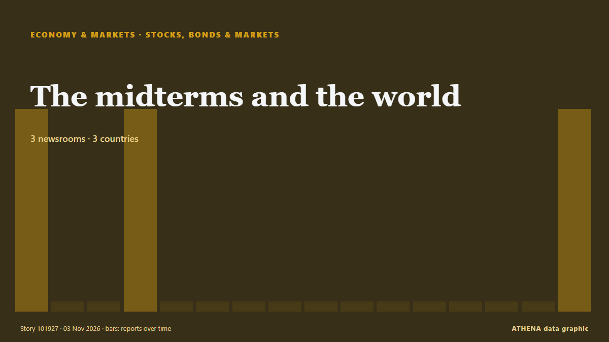

Μετοχές, ομόλογα & αγορές
ΧορηγούμενοΠαρουσιάζεται από  Cybernetics and Artificial Intelligence Lab Welcome to the Cybernetics and Artificial Intelligence Laboratory, established at the Department of Business Administration of the National and Kapodistrian University of Athens. The lab is headed by Professor Dimitrios Thomakos. The lab aims to do research that can be published in top venues. Our research uses tools and methods of Artificial Intelligence, and lies in the following areas: - Forecasting - Decision making - Cyber security - Finance We are always looking forward to collaborating with exceptional students!
Cybernetics and Artificial Intelligence Lab Welcome to the Cybernetics and Artificial Intelligence Laboratory, established at the Department of Business Administration of the National and Kapodistrian University of Athens. The lab is headed by Professor Dimitrios Thomakos. The lab aims to do research that can be published in top venues. Our research uses tools and methods of Artificial Intelligence, and lies in the following areas: - Forecasting - Decision making - Cyber security - Finance We are always looking forward to collaborating with exceptional students!
| 21 Οκτ | 0 |
|---|---|
| 22 Οκτ | 0 |
| 23 Οκτ | 0 |
| 24 Οκτ | 0 |
| 25 Οκτ | 0 |
| 26 Οκτ | 1 |
| 27 Οκτ | 0 |
| 28 Οκτ | 0 |
| 29 Οκτ | 0 |
| 30 Οκτ | 4 |
| 31 Οκτ | 1 |
| 1 Νοε | 0 |
| 2 Νοε | 12 |
| 3 Νοε | 2 |
Οι τίτλοι των ειδήσεων παρουσιάζονται στα αγγλικά, όπως δημοσιεύτηκαν.

The midterms and the world
A Democratic sweep of both houses of Congress would see big changes on energy and trade in particular. από Financial Times - Global economy
An unusual sexual bond between a bull and a male donkey
Sex between animals of the same sex is widespread in nature. από Phys.org
S&P cuts Meta’s outlook to negative
Meta has been given a negative outlook by S&P Global Ratings due to the company's hefty capital expenditures and concerns about free cash flow. από CNBC World
China steps up monetary policy support to bolster stock market
The central bank is conducting swaps and upgrading a re-lending scheme to inject liqudity into the market. από The Business Times
Alphabet launches €6B bond sale in first test of AI debt since selloff
Google’s parent company Alphabet began selling €6bn ($6.7bn) of bonds on Monday. από The Next Web
US stocks recover some of last week's sell-off after oil prices fall sharply
U.S. stocks are climbing Monday after oil prices eased back. από The Korea Times
Anthropic IPO outlook sharpens as revenue surges but compute costs raise new questions
Anthropic has given investors a much clearer look at the financial profile behind one of the most anticipated technology IPOs of the year. από FXStreet
Anthropic IPO: Sharesies among eight brokers chosen for Australian retail offer
Investors can't apply for shares until Anthropic releases an Australian prospectus. από BusinessDesk
Asian stocks mixed as tech sector struggles to rebound from selloff
Artificial intelligence (AI)-linked firms were hit by another wave of selling as Wall Street giants including Amazon, Alphabet and Microsoft signalled they would keep pouring money into data centres… από CNA (Channel NewsAsia)
Palantir reports booming U.S. commercial revenue growth, topping government for first time
Palantir's commercial revenue jumped 148% to $984 million, surpassing government revenue of $953 million. από CNBC World
Warren Buffett, 96, has ‘not had water in 48 years’: ‘No thank you. I’ll have a…’
Jeff Bezos shared insights on investing in artificial intelligence stocks while discussing broader market trends. από Times of India
Only 12 stocks rise as Turkish exchange sheds $128B in fund scandal fallout
Turkey’s benchmark stock index has lost more than a quarter of its value in seven weeks as selling following an investment fund scandal spread to some of the country’s biggest companies, the Ekonomim… από Turkish Minute
Anthropic plans to sell $3.5 billion of shares to Japan investors in IPO, filing shows
This will go towards raising working capital and funding operating expenses and capital expenditure. από The Business Times
OPay Halts $4 Billion NYSE IPO on Listing Day
OPay, a digital financial platform built for emerging markets, has decided to postpone its planned initial public offering due to “an ongoing inquiry by a regulatory authority,” the company said in a… από PYMNTS
CJP backs INDIA bloc's Ramlila Maidan rally, but won't participate in it, says Dipke; cites ‘neutral platform’ identity
Abhijeet Dipke said the CJP supported the cause but would maintain its independent identity. από Hindustan Times